What Do These Sizer Things Do?
One
of the most intimidating parts of wxWidgets is figuring out how sizers
work. They are quite powerful, but sometimes unintuitive. This is
intended as a guide to aid in understanding what all those parameters
do.
This tutorial focuses on box sizers because they are the
most flexible and most commonly used. However, the information here
also applies to other sizer types. Unscoped methods like SetSizer()
belong to wxWindow, but really make most sense in a wxFrame, wxDialog,
wxPanel, or similar types.
A Basic Box Sizer
This
is the most simple type of box sizer. We create a vertical sizer
(children will be placed on top of each other) and place two buttons in
it. All the "extra" parameters are set to 0; we'll worry about them
later.
Local sizer:wxBoxSizer = New wxBoxSizer.Create(wxVERTICAL)
sizer.Add(New wxButton.Create(Self, -1, "A Really Really Big Button"), 0, 0, 0)
sizer.Add(New wxButton.Create(Self, -1, "Tiny Button"), 0, 0, 0)
SetSizer(sizer) |
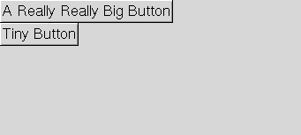 |
You'll notice a couple of things about this:
- The
buttons are just big enough to accommodate the text in them. In fact,
any control placed into a sizer this way will appear at its minimum
size unless we change the parameters.
- The window size is not changed to fit the sizer. This results in a lot of ugly empty space.
Let's
worry about the second issue first. To make the window size more
appropriate, we can set the size hints to tell the enclosing window to
adjust to the size of the sizer:
Local sizer:wxBoxSizer = New wxBoxSizer.Create(wxVERTICAL)
sizer.Add(New wxButton.Create(Self, -1, "A Really Really Big Button"), 0, 0, 0)
sizer.Add(New wxButton.Create(Self, -1, "Tiny Button"), 0, 0, 0)
sizer.SetSizeHints(Self)
SetSizer(sizer) |
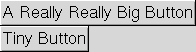 |
This
is particularly useful in circumstances like this one, in which the
wxFrame's default size would otherwise be much too big or small to show
most layouts in an aesthetically pleasing manner.
Parameter 2: Proportion
The
first parameter to Add() is obviously the wxWindow or wxSizer (in the case of AddSizer()) that you
are adding. The second one appears in the documentation as "option,"
but it is probably better described as proportion. This parameter
defines how large the sizer's children are in relation to each other.
In a vertical sizer, this changes the height; in a horizontal sizer,
this changes the width. Here are some examples:
Local sizer:wxBoxSizer = New wxBoxSizer.Create(wxVERTICAL)
sizer.Add(New wxButton.Create(Self, -1, "A Really Really Big Button"), 1, 0, 0)
sizer.Add(New wxButton.Create(Self, -1, "Tiny Button"), 3, 0, 0)
sizer.SetSizeHints(Self)
SetSizer(sizer) |
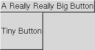 |
| Same code as above, with window resized. Notice that the bottom button is still three times as tall as the top button. |
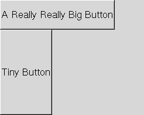 |
Local sizer:wxBoxSizer = New wxBoxSizer.Create(wxVERTICAL)
sizer.Add(New wxButton.Create(Self, -1, "A Really Really Big Button"), 3, 0, 0)
sizer.Add(New wxButton.Create(Self, -1, "Tiny Button"), 2, 0, 0)
sizer.SetSizeHints(Self)
SetSizer(sizer) |
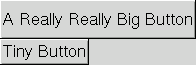 |
| Same code as above, with window resized. The buttons maintain their relative proportions. |
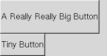 |
If one of the proportion parameters is 0, that wxWindow will be the minimum size, and the others will resize proportionally:
Local sizer:wxBoxSizer = New wxBoxSizer.Create(wxVERTICAL)
sizer.Add(New wxButton.Create(Self, -1, "A Really Really Big Button"), 0, 0, 0)
sizer.Add(New wxButton.Create(Self, -1, "Tiny Button"), 1, 0, 0)
sizer.Add(New wxButton.Create(Self, -1, "Another Button"), 2, 0, 0)
sizer.SetSizeHints(Self)
SetSizer(sizer) |
 |
| Same
code as above, with window resized. The top button (proportion 0) is
still the minimum height, and the third button is still twice the
height of the second. |
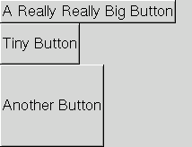 |
This
is especially useful when you want, for example, a button at the bottom
which is only as big as necessary, and some other control that occupies
the rest of the frame. To do so, give the button proportion 0 and the
other control a number greater than 0. Mac users in particular will
appreciate you for not creating huge aqua-styled buttons.
Parameters 3 and 4: Flags and Border
Let's start with the simplest case: the alignment flags. These are pretty self-explanatory.
Local sizer:wxBoxSizer = New wxBoxSizer.Create(wxVERTICAL)
sizer.Add(New wxButton.Create(Self, -1, "A Really Really Big Button"), 0, 0, 0)
sizer.Add(New wxButton.Create(Self, -1, "Tiny Button"), 0, wxALIGN_RIGHT, 0)
sizer.SetSizeHints(Self)
SetSizer(sizer) |
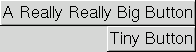 |
Local sizer:wxBoxSizer = New wxBoxSizer.Create(wxVERTICAL)
sizer.Add(New wxButton.Create(Self, -1, "A Really Really Big Button"), 0, 0, 0)
sizer.Add(New wxButton.Create(Self, -1, "Tiny Button"), 0, wxALIGN_CENTER, 0)
sizer.SetSizeHints(Self)
SetSizer(sizer) |
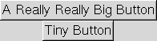 |
Next is the wxEXPAND flag. This is synonymous with wxGROW.
Local sizer:wxBoxSizer = New wxBoxSizer.Create(wxVERTICAL)
sizer.Add(New wxButton.Create(Self, -1, "A Really Really Big Button"), 0, 0, 0)
sizer.Add(New wxButton.Create(Self, -1, "Tiny Button"), 0, wxEXPAND, 0)
sizer.SetSizeHints(Self)
SetSizer(sizer) |
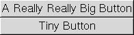 |
You
can see that the first button takes its minimum size, and the second
one grows to match it. This affects controls in the opposite manner of
the second parameter; wxEXPAND in a vertical sizer causes horizontal
expansion, and in a horizontal sizer it causes vertical expansion.
Next
is wxSHAPED. This flag ensures that the width and height of the object
stay proportional to each other. It doesn't make much sense for
buttons, but can be excellent for bitmaps, which would be contorted or
clipped if not scaled proportionally.
Local sizer:wxBoxSizer = New wxBoxSizer.Create(wxVERTICAL)
sizer.Add(New wxButton.Create(Self, -1, "A Really Really Big Button"), 0, 0, 0)
sizer.Add(New wxButton.Create(Self, -1, "Tiny Button"), 1, wxSHAPED, 0)
sizer.SetSizeHints(Self)
SetSizer(sizer) |
 |
| Same
code as above, with window resized. The width grew dramatically with
the height. In fact, it didn't quite grow vertically the whole way
because it couldn't maintain the correct ratio while doing so. |
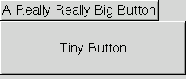 |
Finally,
we have the border flags. These only make sense when the "border"
parameter is greater than 0, and describe the sides of the control on
which the border should appear. In order to demonstrate this most
clearly, we'll keep the wxEXPAND flag.
Local sizer:wxBoxSizer = New wxBoxSizer.Create(wxVERTICAL)
sizer.Add(New wxButton.Create(Self, -1, "A Really Really Big Button"), 0, 0, 0)
sizer.Add(New wxButton.Create(Self, -1, "Tiny Button"), 0, wxEXPAND | wxLEFT, 20)
sizer.SetSizeHints(Self)
SetSizer(sizer) |
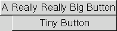 |
Local sizer:wxBoxSizer = New wxBoxSizer.Create(wxVERTICAL)
sizer.Add(New wxButton.Create(Self, -1, "A Really Really Big Button"), 0, 0, 0)
sizer.Add(New wxButton.Create(Self, -1, "Tiny Button"), 0, wxEXPAND | wxLEFT | wxRIGHT, 20)
sizer.SetSizeHints(Self)
SetSizer(sizer) |
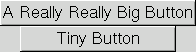 |
Local sizer:wxBoxSizer = New wxBoxSizer.Create(wxVERTICAL)
sizer.Add(New wxButton.Create(Self, -1, "A Really Really Big Button"), 0, 0, 0)
sizer.Add(New wxButton.Create(Self, -1, "Tiny Button"), 0, wxEXPAND | wxLEFT | wxRIGHT | wxTOP, 20)
sizer.SetSizeHints(Self)
SetSizer(sizer) |
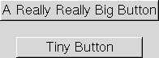 |
Local sizer:wxBoxSizer = New wxBoxSizer.Create(wxVERTICAL)
sizer.Add(new wxButton(Self, -1, "A Really Really Big Button"), 0, 0, 0)
sizer.Add(new wxButton(Self, -1, "Tiny Button"), 0, wxEXPAND | wxALL, 20)
sizer.SetSizeHints(Self)
SetSizer(sizer) |
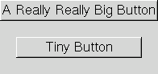 |
Local sizer:wxBoxSizer = New wxBoxSizer.Create(wxVERTICAL)
sizer.Add(new wxButton(Self, -1, "A Really Really Big Button"), 0, 0, 0)
sizer.Add(new wxButton(Self, -1, "Tiny Button"), 0, wxEXPAND | wxALL, 5)
sizer.SetSizeHints(Self)
SetSizer(sizer) |
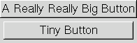 |
You
can see that the button is offset from the specified edges of the sizer
by the number of pixels that we specified in the "border" parameter.
Conclusion
I
hope this document has made it easier to understand what the various
wxBoxSizer parameters do. Sizers are really quite powerful, and their
use will help ensure that your applications look correct on all
platforms.
Author
Comments and suggestions may be directed to Brian Victor (brianhv@users.sourceforge.net)
Adapted for wxMax by Bruce A Henderson.